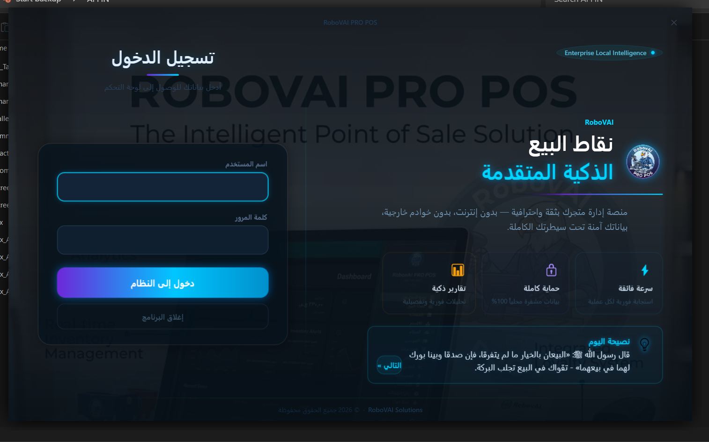
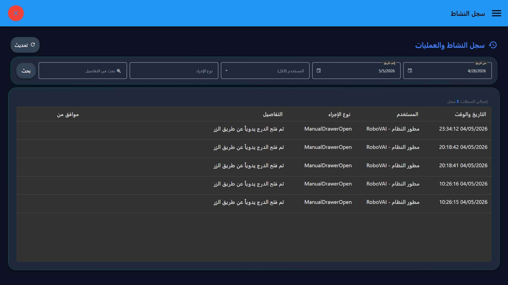
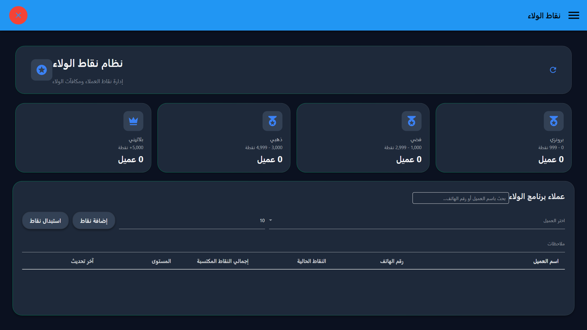

01
بداية اليوم والوردية (The Start)
النظام يبدأ بشاشة دخول مشفرة تضمن أن كل عملية بيع مسجلة باسم الموظف المسؤول.
💡 نصيحة الخبراء: تأكد دائماً من مطابقة رصيد "بداية الدرج" مع المبلغ الفعلي لضمان دقة التقارير الختامية.

02
البيع السريع (Turbo Checkout)
هنا قلب النظام. تم تصميم شاشة المبيعات لتعمل سواء كنت تستخدم الماوس، اللمس، أو الباركود فقط.
⌨️ اختصارات الكيبورد (أسرع من الماوس):
إتمام البيع وطباعة Enter
تطبيق خصم F2
بحث عن صنف F3
إلغاء الفاتورة Esc

03
إدارة المخزون الذكية
إضافة الأصناف لا تتطلب خبيراً. النظام يدعم استيراد البيانات، الأقسام المتعددة، وتنبيهات النواقص.
💡 ميزة مخفية: يمكنك طباعة "باركود" خاص بمحلك لأي منتج ليس له باركود دولي مباشرة من شاشة المخزون.

04
تقفيل اليومية (End of Shift)
أخطر لحظة في يومك هي مطابقة الدرج. نظامنا يجعلها أسهل وأكثر شفافية.
- ✅ يتم حساب المبيعات (كاش/فيزا/آجل) بدقة.
- ✅ يتم خصم المصروفات المسجلة خلال الوردية.
- ✅ يطبع النظام تقرير Z-Report يوضح "العجز والزيادة" فوراً.

05
سجل النشاط (Audit Trail)
كصاحب عمل، يمكنك مراقبة كل حركة صغيرة أو كبيرة. من حذف صنف؟ ومن عدل سعراً؟ ومتى؟
⚠️ تحذير أمني: لا يمكن للموظفين حذف أي سجل من هذا النشاط، مما يجعله مرجعك الأول في حالات الخلاف.

06
نقاط الولاء (Loyalty Rewards)
حول زبونك العادي إلى زبون دائم. النظام يحسب نقاطاً لكل عملية شراء يمكن للعميل استبدالها بخصومات لاحقاً.

07
إعدادات الهاردوير (Plug & Play)
يرتبط النظام بجميع أنواع الطابعات (80mm / 58mm) وأدراج النقدية والموازين الإلكترونية بضغطة زر واحدة.